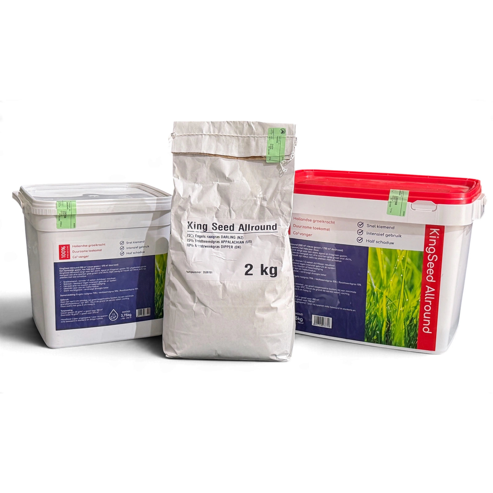

Maak eerst een herstelplan
Noteer waar het gazon dun is en waarom. Een drukke looproute vraagt bijvoorbeeld ook om aandacht voor gebruik en bodemverdichting. Bij langdurige schaduw moet het grasmengsel bij de lichtomstandigheden passen. KingSeed Allround wordt op het productblad genoemd voor zon en halfschaduw.
Doorzaaien in vijf stappen
- Ruim de grasmat op. Verwijder blad en losse resten. Maai zo nodig passend, zonder het gazon kaal te scheren.
- Zorg voor contact met grond. Hark open plekken licht los. Verticuteren is alleen een passende voorbereiding wanneer er een storende viltlaag is; het is geen vaste verplichting bij elke doorzaai.
- Meet en weeg af. Bereken voor KingSeed 10 gram per m² doorzaai. Voor 60 m² is dat 600 gram.
- Verdeel gelijkmatig. Splits de afgewogen hoeveelheid in twee delen en werk in verschillende richtingen. Zo voorkom je dat het eerste vak alles krijgt.
- Plan vocht en rust. Houd de grond de eerste weken vochtig en beperk intensieve betreding van jonge planten.
Volledig doorzaaien of een kale plek opnieuw inzaaien?
Het KingSeed-productblad maakt onderscheid tussen doorzaai, 10 g/m², en nieuwe aanleg, 25 g/m². Een bestaande dunne mat is niet hetzelfde als volledig kale grond. Bespreek bij grotere kale vlakken welke toepassing past en bekijk de rekentabel voor de twee zaaihoeveelheden.
Wat doe je na het zaaien?
Controleer het vocht bij het zaad in plaats van alleen de kleur van het oude gras. Geef voorzichtig water zodat het zaad niet wegspoelt. Het productblad noemt een eerste maaibeurt bij 8 cm grashoogte; kijk ook of het jonge gras voldoende vaststaat.
Lees voor de keuze van een geschikte periode wanneer je graszaad kunt zaaien. De genoemde één tot twee weken voor zichtbaar resultaat is een productindicatie bij passende omstandigheden, geen termijn voor een volledig belastbare grasmat.
Bekijk KingSeed Allround en het productblad voor de samenstelling en gebruiksvoorwaarden. Stem eventuele bemesting afzonderlijk af; een doorzaaibeurt vraagt niet automatisch om een extra mestgift.
Veelgestelde vragen
Veelgestelde vragen
Moet je altijd verticuteren voor doorzaaien?
Nee. Beoordeel of een storende viltlaag aanwezig is. Zaad moet de grond kunnen bereiken, maar onnodig zwaar verticuteren kan de bestaande grasmat verder beschadigen.
Hoeveel KingSeed gebruik je voor 100 m² doorzaai?
Bij de productspecifieke richtlijn van 10 g/m² is dat 1 kg. De richtlijn voor nieuwe aanleg is anders: 25 g/m².